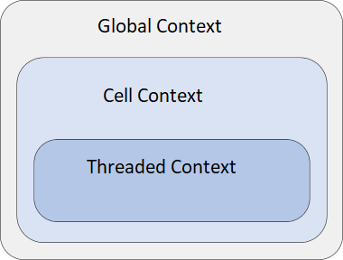

The owner of a value in memory is the code or object responsible for freeing the value when it is no longer needed. Failure to do so may cause excessive memory consumption (a memory leak). Deallocation of objects that are not owned, or use of objects after they have been freed, will likely result in a crash.
The ownership rules only apply to code written in C, C++ and DML. In Python, memory management is entirely automatic.
The general rules in Simics are:
const T *, for some type T, is taken to mean that ownership of the returned value is not transferred to the caller, overriding the previous rule.Exceptions to the rules above are documented for each interface or API call.
Each data type has its own way of deallocation. It is generally documented where objects of that type are created; see below for some specific examples.
Null-terminated strings are freed using MM_FREE in C or C++, delete in DML.
They are created using MM_MALLOC, MM_STRDUP or other functions that create heap-allocated strings.
(The standard C library functions malloc, free etc should not be used.)
The pointer-to-const rule applies: a string returned as char * becomes owned by the caller, but not one returned as const char *.
A value of type attr_value_t may contain heap‑allocated data.
This is particularly true for values of list or string kind.
When a function returns an attr_value_t, ownership of the returned value is transferred to the caller, in the same way as for pointers. Use SIM_attr_free to free the value.
Because an attr_value_t may reference heap‑allocated data, it cannot be copied via simple (shallow) assignment.
To obtain a deep copy that remains valid after the original value has been freed, use SIM_attr_copy.
Some attr_value_t accessor functions — such as SIM_attr_list_item and SIM_attr_scanf — return values that borrow references to parts of their argument.
These borrowed values must not be modified, and they become invalid once the argument’s lifetime ends.
This restriction does not apply to non‑allocated values such as numbers or booleans.
Values of some types are always owned and managed by Simics itself and should never be freed by the user.
Examples are conf_object_t and conf_class_t.
Values of type bytes_t and buffer_t represent a data buffer with borrowed ownership of the payload, and in many cases the actual payload is stack allocated.
For this reason it is problematic to pass ownership of these types.
Thus, these types are only suitable for function arguments, not for return values.
The set of Simics API functions and interface methods that can be called at a given point depends on the state of the execution thread at the time of the call. The thread states are classified into API execution contexts. Three distinct execution contexts are defined, and they are inclusive, as illustrated in the figure below:

Below is a description of the defined execution contexts:
Previously, this context was known as Outside Execution Context (OEC).
The most permissive context. A thread running in Global Context has exclusive access to all objects in the simulation.
In Global Context, either the simulation is not running or all simulation activity has temporarily been suspended. The front-end runs in this context, as do the callbacks from SIM_run_alone, SIM_thread_safe_callback and SIM_notify_on_socket with the run_in_thread argument set to 0. Module initialization, object creation and object destruction are also performed in this context.
The full API is available, including functions and methods documented as callable in other contexts.
This is a single context which was introduced in Simics 6 instead of Execution Context (EC) and Instruction Context (IC) that were around before.
The context used for most device simulation. Typically used when the simulation is running.
Only functions and methods documented as callable in Cell Context or Threaded Context are available in this context.
Other objects in the simulation may be accessed or referenced, but only objects belonging to the same simulation cell. The cell concept is discussed in some detail in the Simulation Cells section, but basically it is a partitioning of the simulation into groups of objects. Cell Context is always tied to a specific cell.
Most device code runs in this context, for instance when a CPU accesses a device register, as do event callbacks and many hap handlers.
Previously, this context was known as Foreign Thread Context (FTC).
The most restrictive context, denoting a thread which is in neither Cell Context nor Global Context.
Manually created threads and SIM_run_in_thread callbacks are examples where this context is applicable. Thread-aware models, like a CPU with support for multicore threading, also perform most of their simulation in Threaded Context.
The available API is limited to functions explicitly declared as being available in Threaded Context, but a more permissive context can be entered when needed. For example, SIM_thread_safe_callback posts a callback which is invoked in Global Context, and Cell Context can be reached with the SIM_ACQUIRE_CELL primitive.
While objects can be accessed in this context, it is only permitted after special primitives are used to ensure single-threaded access. This usually amounts to entering Cell Context, but thread-aware models can actually access their own object state directly from Threaded Context. This is discussed in the Threading Model chapter.
The reference manuals detail the permitted API execution context for each API function and interface method. Calls are allowed in the specified and more permissive contexts.
Violations of the API execution context rules have undefined consequences. They may result in warnings or error messages, but this is not guaranteed. In particular, a class implementing an interface method is under no obligation to perform any such checks.